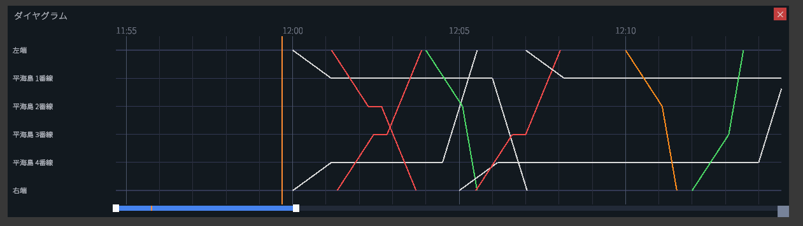
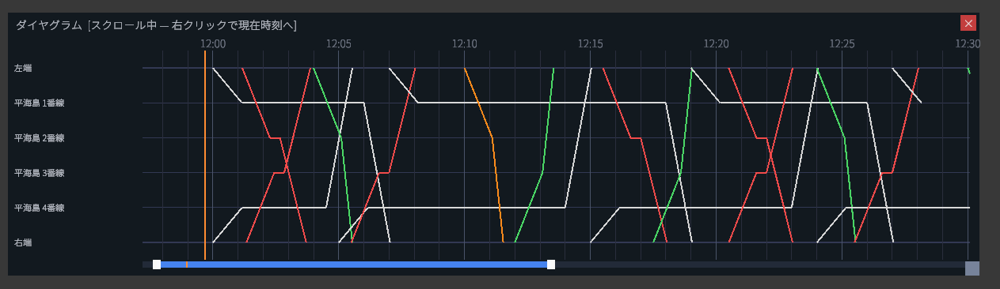

🎯 개요
다이어그램 뷰는 세로축에 역·승강장·인상선, 가로축에 시각을 배치하여 계획 다이어그램을 꺾은선 그래프로 한눈에 표시하는 패널입니다. 각 열차가 언제·어느 승강장에서 발착하는지를 한눈에 파악할 수 있어, 회차 열차의 추적이나 본선 통과 열차의 확인에 유용합니다.
🪟 열기/닫기
다이어그램 뷰의 표시/숨기기는 다음 중 하나의 조작으로 전환합니다.
| 조작 | 동작 |
|---|---|
| F1 키 | 패널 표시/숨기기 전환 |
| 화면 상단의 '다이어그램' 버튼 | 패널 표시/숨기기 전환 |
🖥 화면 보는 방법

세로축(행 레이블)
맵 내의 역·승강장·인상선·종단 등이 위에서부터 순서대로 나열됩니다.
가로축(시간축)
패널 상단에 시각 눈금이 표시됩니다. 1분 단위의 가는 눈금에 더해 5분마다 굵은 세로선이 그어져 있어 시간 스케일을 파악하기 쉽습니다.
현재 시각선
주황색 세로선이 현재 시나리오 시각을 나타냅니다. 평소에는 화면 중앙 부근에 주황색 선이 표시되며, 시간이 지남에 따라 다이어그램 선이 왼쪽에서 오른쪽으로 흘러갑니다.
🎨 다이어그램 선의 색 구분
다이어그램 선은 열차의 종별마다 색이 할당되어 있습니다.
| 종별 | 색 |
|---|---|
| 보통 | 흰색 |
| 급행 | 파란색 |
| 특급 | 빨간색 |
| 쾌특 | 초록색 |
| 에어포트 쾌특 | 주황색 |
| 라이너 | 보라색 |
| 회송 | 회색 |
↔ 스크롤 조작
과거나 미래 시각의 다이어그램을 확인하려면 패널 위에서 다음 조작을 합니다.
| 조작 | 동작 |
|---|---|
| 마우스로 좌우 드래그 | 시간축을 앞뒤로 스크롤 |
| 마우스 휠 회전 | 시간축을 앞뒤로 스크롤 |
| 패널 위에서 우클릭 | 현재 시각 추적 모드로 복귀 |
추적 모드와 스크롤 모드
패널의 헤더 표시로 현재 모드를 판별할 수 있습니다.
| 상태 | 헤더 표시 |
|---|---|
| 현재 시각 추적 중 | 다이어그램 |
| 스크롤 중 | 다이어그램 [스크롤 중 — 우클릭으로 현재 시각으로 이동] |

⚠ 주의 사항
다이어그램 뷰에 그려져 있는 것은 시나리오에 등록된 계획 다이어그램입니다. 실제 열차의 지연, 취급 실수로 인한 정지, 신호 모진 등의 상황은 이 화면에 반영되지 않습니다. 실제 열차의 위치는 메인 화면의 맵에서 확인해 주세요.